Forge qualification case
Face-relative hole pattern
Verify a 2D profile, native extrusion, patterned holes and placement on a selected face.
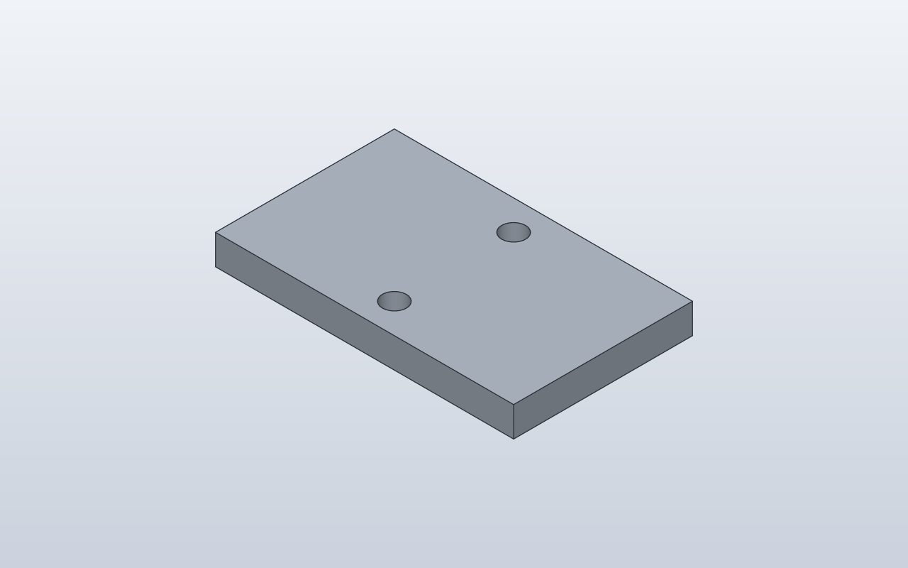
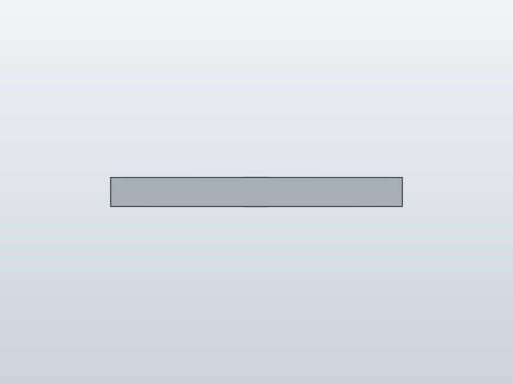
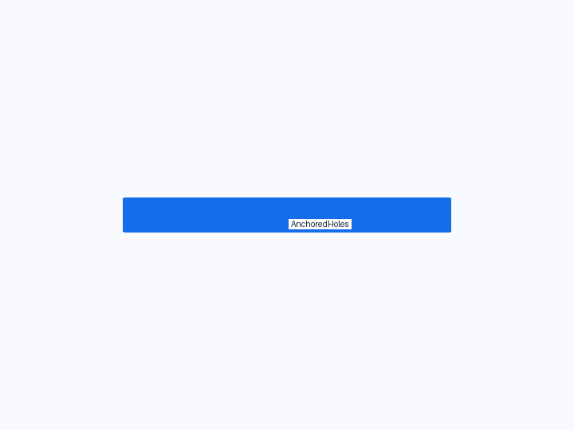
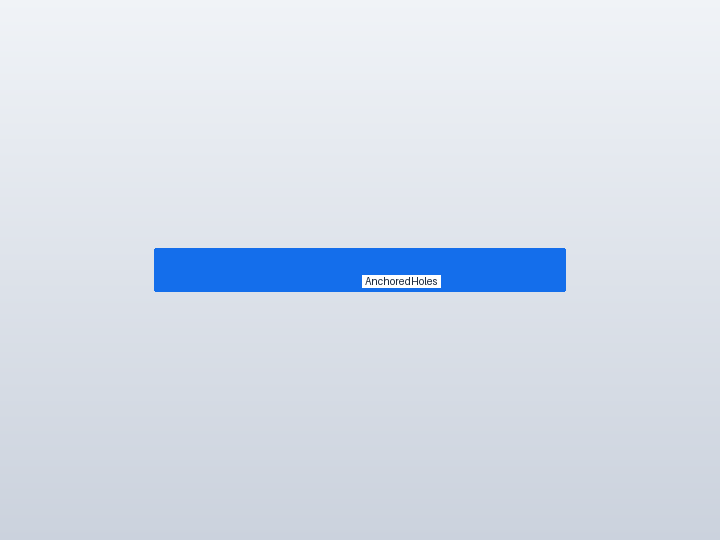
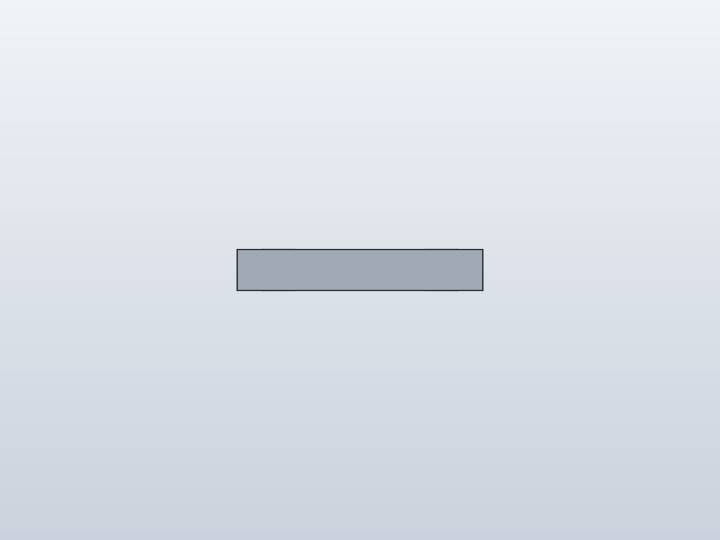
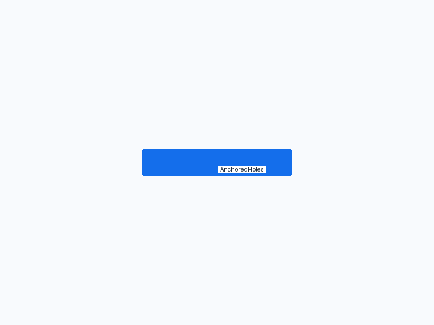
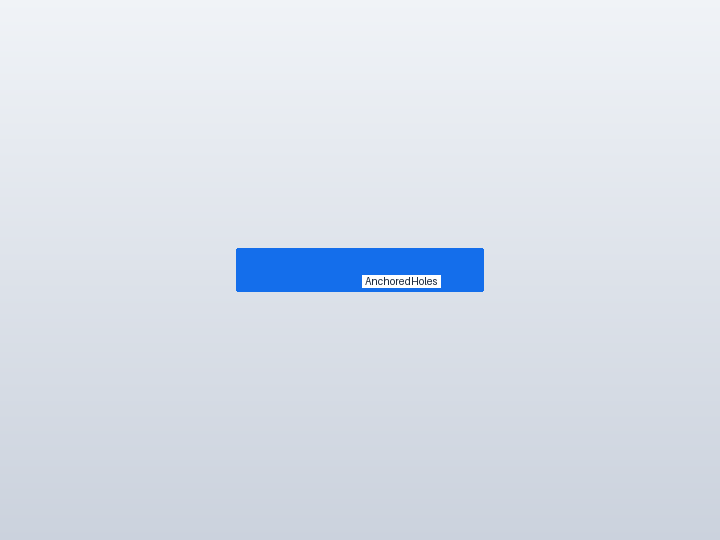
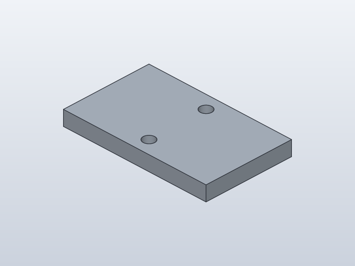
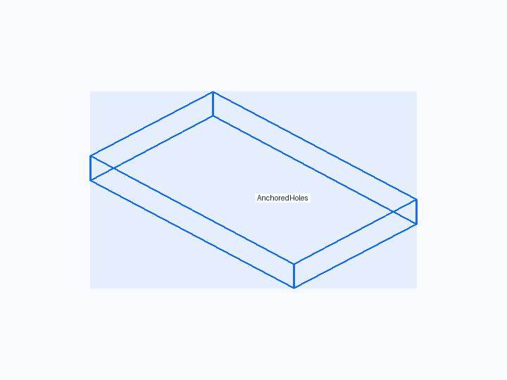
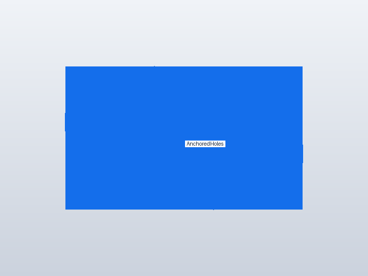
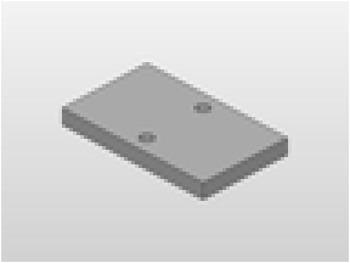
1. Forge contract
Public API
Rectangle2D(...).extrude(...); Hole(...).pattern(...).on(..., face=Faces.TOP)
Internal Forge model
A feature-based plate plus a patterned Hole feature anchored to the plate's TOP face.
SolidCraft lowering
Native sketch/extrude commands followed by native hole/pattern placement commands; Forge does not subtract hand-built cylinders.
2. Native verification
Expected result
One plate with two through holes at the requested Y spacing and no feature errors.
Parametric mutation
No saved-design mutation in this fixture; geometry and feature placement are measured at Q4.
Evidence
- Fixture source
- Generated command JSON
- results.json
- measurements.json
- joint-inspect.json
- model.sc
- model.step
- qualification-result.json
- validation.json
- visual-validation.json
- camera-front.json
- camera-iso.json
- camera-right.json
- Native snapshot: model.png
- Native snapshot: model-front.png
- Native snapshot: goal-front.png
- Native snapshot: overlay-front.png
- Native snapshot: visual-diff-front.png
- Native snapshot: model-right.png
- Native snapshot: goal-right.png
- Native snapshot: overlay-right.png
- Native snapshot: visual-diff-right.png
- Native snapshot: model-iso.png
- Native snapshot: goal-iso.png
- Native snapshot: overlay-iso.png
- Native snapshot: visual-diff-iso.png


3. Results
Baseline · 1 bodies · measurements.json
Parameters
| Name | Value |
|---|---|
width | 100.0 |
depth | 60.0 |
thickness | 10.0 |
spacing | 40.0 |
Bodies
| Body | BBox min | BBox max |
|---|---|---|
| AnchoredHoles | [0, 0, 0] | [100, 60, 10] |
Semantic validation
| Status | Level | Check | Expected | Actual |
|---|---|---|---|---|
| PASS | Q4 | declared target geometry | [{"label": "AnchoredHoles", "min": [0, 0, 0], "max": [100, 60, 10]}] | [{"min": [0.0, 0.0, 0.0], "max": [100.0, 60.0, 10.000000000000005]}] |
| PASS | Q4 | one plate body | 1 | 1 |
| PASS | Q4 | plate outer bounds | {"min": [0, 0, 0], "max": [100, 60, 10]} | {"max": [100.0, 60.0, 10.000000000000005], "min": [0.0, 0.0, 0.0]} |
| PASS | Q4 | two cylindrical hole walls | 2 | 2 |
| PASS | Q4 | two through holes remove expected volume | 58994.69035085127 | 58994.857336489986 |
4. Generated native relationship/command path
parameters.add
parameters.add
parameters.add
parameters.add
sketch.create
sketch.rectangle.two_point
sketch.finish
solid.extrude
sketch.create
sketch.circle.center
sketch.circle.center
sketch.finish
solid.extrude5. Reference models
These comparisons clarify concepts; Forge does not promise API compatibility with them.
- OpenSCAD: Comparable geometry would normally use difference() and repeated cylinders; Forge intentionally prefers SolidCraft hole features.
6. Fixture source
@dataclass
class AnchoredHoles:
"""Two through holes, each 20 mm from the center along the Y axis."""
width: float = 100
depth: float = 60
thickness: float = 10
spacing: float = 40
def build(self):
plate = Rectangle2D(self.width, self.depth).extrude(self.thickness)
holes = Hole(d=8, depth=Depth.THROUGH_ALL).pattern(
count=2, spacing=self.spacing, axis=Axis.Y
).on(plate, face=Faces.TOP)
plate + holes
AnchoredHoles()